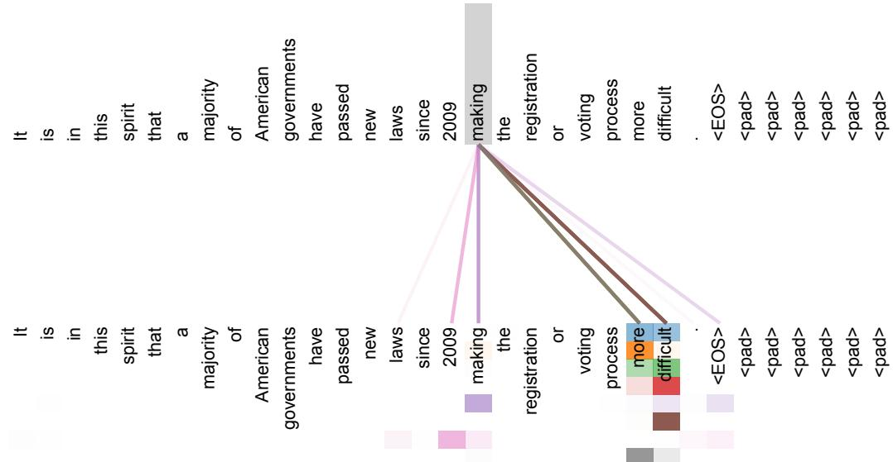
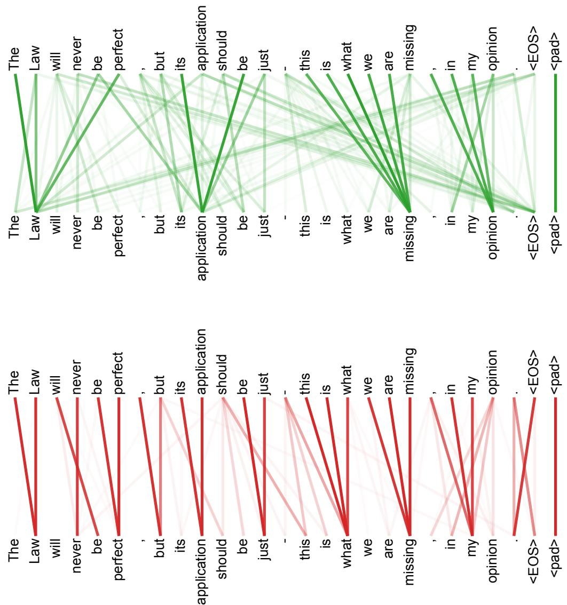

4.3 多头注意力与掩码：八个视角看同一句
本页范围：第 4 章第 3 节 | 整理时间：2026-09-29
上一节讲透了单头注意力的原理，但原论文（Vaswani et al., 2017）实际用的是 8 个头，生成场景还离不开掩码。本节解决两个接踵而来的问题：一个头为什么不够，以及自回归生成时怎么封死通往未来的信息通道。两个主题一前一后：
- 一个头为什么不够：平均会糊掉多种关系（4.3.1）：单头只端得出一份"什锦菜"，消融实验与注意力可视化两条证据都站在多头一边；
- 多头机制：投影、分头、拼接、再投影（4.3.2）：512 维拆成 8 个 64 维子空间并行计算，参数量与算力却不增加；
- 掩码：给未来的卷子贴上封条（4.3.3）：在 softmax 之前给未来位置加 −∞，权重精确归零，整句并行训练与逐词生成由此等价；
- 一份注意力，三种岗位（4.3.4）：同一模块靠切换 Q、K、V 的来源和可见范围，分别干"读原文""写译文""边写边查原文"三件事。
读完本节，你应该能说清两件事：8 个头为什么不花 8 倍的钱，以及"不许看未来"这条纪律是靠什么数学手段焊死的。
多头注意力就在 4.2 节那台机器的原地：同一个 Transformer 层，同一个位置，只是把单机换成了机群。先看它在链路中的站位：
所谓机群，就是把 4.2 节那台注意力机器原样复制 8 份并行：4.2 节图 2 的最终输出（3 × 96），就是下面图 2 里每个头框装的内容。用 minimind 的真实尺寸（8 个头、每头 96 维）把这台机群画出来：
4.3.1 一个头为什么不够：平均会糊掉多种关系
上一节的缩放点积注意力只有一套打分体系：每个位置对所有位置算一组分数，softmax 之后做一份加权平均。一份平均意味着每个位置最终只端得出一盘"什锦菜"：主谓搭配、指代关系、修饰关系全被搅进同一个向量里，谁也说不清这盘菜到底是什么味。原论文在 3.2.2 节直接点破了这个问题：
多头注意力允许模型在不同位置共同关注来自不同表示子空间的信息。使用单个注意力头时，平均操作会抑制这种能力。（3.2.2 节）
换成机制语言来说：单个注意力头只有一套投影，一句话里的语法、指代、长距离搭配等多种关系只能挤在同一份注意力分布里，细节难免被平均掉。多头注意力把表示拆成多路并行，让不同的头各自捕捉不同类型的依赖关系，最后把各路结果拼接汇总，表示就完整得多。这就是多头注意力的直觉。
512 维的向量可以切成 8 段 64 维的小空间，每段就是原空间的一个子空间。模型可以让不同子空间专门编码不同性质的关系：一段管语法搭配，一段管指代，互不干扰。多头机制里的"投影到低维"，就是把每个头送进各自的子空间工作。
这个直觉有两条硬证据。一条来自消融实验：原论文 6.2 节表 3 的 (A) 组在保持总计算量不变的前提下改变头数，结果是单头（\(h=1\)）比最佳设置低 0.9 个 BLEU，头数过多时质量同样下降，基准设置 \(h=8\) 在英德开发集上取得 25.8 的 BLEU。另一条来自可视化：论文附录把训练好的注意力权重画了出来，不同的头确实在干不同的活。


所以这一步在干嘛：单头是一个人包办所有关系，多头是把评审团拆开，让每个头在自己的子空间里专盯一类模式，免得所有线索被一锅平均成糊。
4.3.2 多头机制：投影、分头、拼接、再投影
多头的做法分四步：把 Q、K、V 投影到低维，分成 8 个头，8 个头并行各自算注意力，把 8 份输出拼接后再投影一次。每一步都是矩阵运算，可以完全并行。原论文 3.2.2 节的定义：
式中各投影矩阵的形状为 \(W_i^Q\in\mathbb{R}^{d_{\mathrm{model}}\times d_k}\)、\(W_i^K\in\mathbb{R}^{d_{\mathrm{model}}\times d_k}\)、\(W_i^V\in\mathbb{R}^{d_{\mathrm{model}}\times d_v}\)、\(W^O\in\mathbb{R}^{hd_v\times d_{\mathrm{model}}}\)。原论文的具体设置：\(d_{\mathrm{model}}=512\)，\(h=8\)，每个头 \(d_k=d_v=d_{\mathrm{model}}/h=64\)。
| 量 | 符号 | 原论文取值 | 含义 |
|---|---|---|---|
| 模型主维度 | \(d_{\mathrm{model}}\) | 512 | 残差流的宽度，每层输入输出都是这个维度 |
| 注意力头数 | \(h\) | 8 | 并行计算的子空间份数 |
| 每头键/查询维度 | \(d_k\) | 64 | 每个头用来算分数的向量长度 |
| 每头值维度 | \(d_v\) | 64 | 每个头输出的向量长度 |
| 拼接后维度 | \(h\cdot d_v\) | 512 | 恰好等于 \(d_{\mathrm{model}}\)，无缝接回主干 |
把张量形状走一遍。假设一句话有 \(n=10\) 个 token，输入是 \(10\times 512\) 的矩阵。第 \(i\) 个头用自己的三套投影矩阵（各 \(512\times 64\)）把它压成 \(10\times 64\) 的 \(Q_i\)、\(K_i\)、\(V_i\)，按上一节的缩放点积算出 \(10\times 64\) 的输出。8 个头各产出一份 \(10\times 64\)，按列拼起来是 \(10\times 512\)，最后乘 \(W^O\)（\(512\times 512\)）得到 \(10\times 512\)，维度与输入完全一致，可以直接交给残差连接和下一层。
8 个头会不会把算力翻 8 倍？不会，账很好算。以 Q 投影为例：单头全维方案需要一套 \(512\times 512\) 的投影矩阵；多头方案是 8 套 \(512\times 64\)，总参数量 \(8\times 512\times 64=512\times 512\)，一模一样。注意力打分的计算量同理。原论文因此写明："由于每个头的维度降低，总计算成本与使用全维度的单头注意力相似。"
所以这一步在干嘛：把 512 维的大会议室隔成 8 间 64 维的小会议室，8 场讨论同时开，最后把 8 份纪要钉成一份，交给下一层。
4.3.3 掩码：给未来的卷子贴上封条
多头解决的是"看得全"，掩码解决的是"不许看"。语言模型生成是一个词一个词往外写的：写出第 3 个词时，第 4 个词还不存在。可训练时句子的所有位置是同时送进模型的，如果不加限制，模型预测每个词时都能直接看到答案，那就什么也学不到。这条"只许依赖已经写出来的内容"的纪律，叫做自回归。
自回归模型每生成一步，只能把已经生成的内容当作已知条件。写出第 \(i\) 个词时，能用的信息只有第 1 到第 \(i-1\) 个词。Transformer 不靠外部规则维持这条纪律，而是用掩码把它直接焊死在注意力计算里。
一个下三角形状的开关：位置 \(i\) 允许看 \(j\leq i\) 的位置（包括自己），\(j>i\) 的位置一律封死。实现上不动 softmax 本身，而是在 softmax 之前把非法位置的注意力分数改成 \(-\infty\)，让 softmax 替你把它们的权重清零。
具体做法极简。在 \(QK^\top/\sqrt{d_k}\) 算出的分数矩阵上，给所有"看向未来"的格子加 \(-\infty\)（工程里也常用一个很大的负数，比如 \(-10^9\)）。softmax 对 \(-\infty\) 的处理是 \(e^{-\infty}=0\)，这些位置的权重被压成精确的 0。工程上常把这件事写成给分数矩阵加一个掩码矩阵 \(M\)：
所以这一步在干嘛：在打分表上给每个未来位置盖 \(-\infty\) 的章，softmax 一过滤，这些位置的权重变成 0，模型写每个词时眼里真的只有过去。
4.3.4 一份注意力，三种岗位
同一个 MultiHead 模块，在编码器-解码器架构里被安排到三个岗位，区别只在两件事：Q、K、V 分别从哪儿来，谁能看谁。原论文 3.2.3 节的划分：
| 岗位 | Q 来自 | K、V 来自 | 每个位置能看谁 | 掩码 |
|---|---|---|---|---|
| 编码器自注意力 | 编码器前一层输出 | 编码器前一层输出 | 输入序列全部位置 | 无 |
| 解码器掩码自注意力 | 解码器前一层输出 | 解码器前一层输出 | 自己及左边（\(j\leq i\)） | 因果掩码 |
| 编码器-解码器注意力（交叉注意力） | 解码器前一层输出 | 编码器输出 | 输入序列全部位置 | 无 |
前两种是自注意力，Q、K、V 同源，区别只在有没有封条：编码器读原文时全句可见，解码器写译文时只许回看。第三种常叫交叉注意力（cross-attention）：Q 是解码器当前的状态，相当于"我现在想知道什么"；K、V 是编码器读完原文后留下的全套笔记，相当于"原文哪里写着答案"。翻译时每写一个词，解码器都拿着自己的问题去原文里检索一遍最相关的段落。
值得一提的是，今天主流的 GPT 系模型只保留了第二种岗位：它们是纯解码器（decoder-only）架构，没有编码器，交叉注意力整层取消，只剩掩码自注意力一路堆叠。掩码因此从"三种用法之一"变成现代 LLM 的默认设定，第 12 章讲解码策略时还会反复用到它。配套小工程 minimind 正是这样一个纯解码器模型。
所以这一步在干嘛：同一台发动机装在三个工位上，靠切换 Q、K、V 的来源和可见范围，分别干"读原文""写译文（不偷看）""边写边查原文"三件事。
参考来源
- Vaswani et al., 2017. Attention Is All You Need（arXiv:1706.03762）：多头公式与 \(h=8\)、\(d_k=d_v=64\) 的设定出自 3.2.2 节；掩码机制与输出嵌入右移出自 3.1 与 3.2.3 节；三种注意力岗位出自 3.2.3 节；头数消融（单头低 0.9 个 BLEU、\(h=8\) 基准 25.8）出自 6.2 节表 3；注意力头分工的可视化证据出自附录图 3 与图 5。本页正文所称「原论文」即此篇。
- minimind 工程源码（Apache 2.0 协议）：
model/model_minimind.py中Attention类的多头与因果掩码实现。